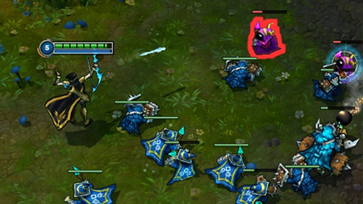

|  |
Tropas |
Tropas são soldados controlados pela I.A que surgem do nexus e marcham pelas rotas até a base inimiga, atacando os inimigos que encontram pelo caminho. Aplicar o golpe final numa tropa concede uma recompensa em Ouro para o seu campeão. Tropas preferem lutar umas contra as outras, mas atacarão seu campeão se ele estiver sozinho na rota. Elas também atacarão qualquer campeão que ataque um campeão aliado delas. Não as subestime tropas, principalmente no começo do jogo! |